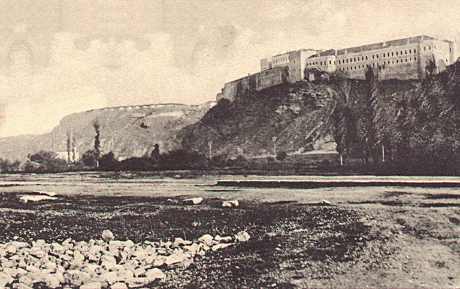
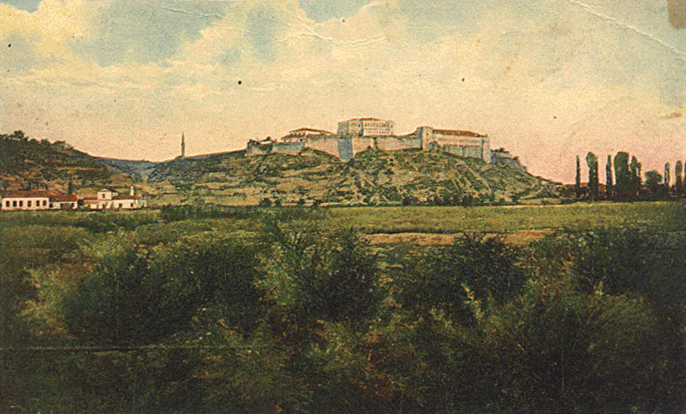
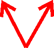

Kale
- Production
- UFUŽ and Documentary Film Prague
- Screenplay and direction
- Slavko Janevski and EMAN CANERA
- Year
- 1959
- Length
- 00:10

The entrance to the Skopje fortress - Kale. (beginning of the 20th century)
One of the most dominant places in the centre of Skopje is the Skopje fortress - Kale*. Excavations have shown that the Kale was inhabited as early as prehistoric times, in the Neolithic and the Early Bronze Age. People lived on the Kale because of its outstanding strategic position. Study of the structure has shown that its foundations used material from Scupi, which was almost completely destroyed in the catastrophic earthquake of 518. After that earthquake the city moved to its present site. A fortification was built and extended and strengthened over the centuries. Today only a small part of it remains; it has been restored, with a promenade laid out in its middle.
* (Kale means fortress in Turkish, and the people adopted the word as a short name for the Skopje fortress)

The Skopje fortress - Kale with part of its walls.
- beginning of the 20th century

The Skopje fortress - Kale - the 1910s.

The Skopje fortress - Kale - photographed from the side of today's park, end of the 19th century.

The Skopje fortress - Kale - the 1910s.

The Skopje fortress - Kale - the 1910s.

The Skopje fortress - Kale. Photographed from the site of today's park, the 1910s.

The Skopje fortress - Kale. Photographed from the site of today's park, the 1910s.

View of the Skopje fortress - Kale. The 1920s.

View of the Skopje fortress - Kale from the north.
- the 1910s.

A beautiful photograph of the city and the course of the Vardar. On the left is the Skopje fortress - Kale. In the centre are the Officers' Club and the National Bank. On the right is Mount Vodno, and in the distance the edges of Mount Kitka
.- end of the 1920s.

The Skopje fortress - Kale and the old "Boges" café, where actors gathered and the first theatre performances were held - beginning of the 20th century.

The Skopje fortress - Kale with the barracks - 1911. Below the fortress is the old "Boges" café.

The Skopje fortress - Kale and the old "Boges" café
- end of the 1910s.

The photograph was taken from the Stone Bridge, around 1910. On the left is the old Turkish theatre, and above it the Skopje fortress - Kale.

The photograph was taken from the Stone Bridge, around 1910. On the left is the old Turkish theatre, and above it the Skopje fortress - Kale.

The Skopje fortress - Kale and the old Jewish quarter below it - end of the 1910s.

The Skopje fortress - Kale, with some of the houses of the Jewish quarter under construction - the 1920s.

The Skopje fortress - Kale, with some of the houses of the Jewish quarter below - the 1920s.

The Skopje fortress - Kale and the newly built houses in the Jewish quarter - the 1920s.

The Skopje fortress - Kale with some of the houses of the Jewish quarter - the 1920s.

The Skopje fortress - Kale and the newly built houses in the Jewish quarter - the 1920s.

The Skopje fortress - Kale. Below it are some of the houses of the Jewish quarter - the 1920s.

The Skopje fortress - Kale and the newly built houses in the Jewish quarter - the 1920s.

View of the Skopje fortress - Kale from one of the streets of the Jewish quarter - the 1920s.

A photograph taken from the Officers' Club - around 1930. A beautiful view of the National Theatre, the little wooden bridge and the Skopje fortress - Kale.

In the foreground is the National Theatre, and above it rises the Skopje fortress - Kale - the 1930s.

A photograph of the Skopje fortress - Kale, in which the parts of the fortification are clearly visible. Below the fortress is the National Theatre in all its beauty.
- the 1930s.

A photograph of the Skopje fortress - Kale, in which the parts of the fortification are clearly visible. Below the fortress is the National Theatre - the 1930s.

In the foreground is the National Theatre, and above it rises the Skopje fortress - Kale - the 1950s.




 Aqueduct4 postcards
Aqueduct4 postcards Kale30 postcards
Kale30 postcards Bridges60 postcards
Bridges60 postcards Quay58 postcards
Quay58 postcards Square46 postcards
Square46 postcards Buildings66 postcards
Buildings66 postcards Christian churches19 postcards
Christian churches19 postcards Muslim buildings33 postcards
Muslim buildings33 postcards Officers' Club29 postcards
Officers' Club29 postcards Theatre28 postcards
Theatre28 postcards Railway station13 postcards
Railway station13 postcards Schools36 postcards
Schools36 postcards Parks12 postcards
Parks12 postcards Markets18 postcards
Markets18 postcards Streets38 postcards
Streets38 postcards Panorama I60 postcards
Panorama I60 postcards Panorama II30 postcards
Panorama II30 postcards Collages55 postcards
Collages55 postcards Floods9 postcards
Floods9 postcards Earthquake27 postcards
Earthquake27 postcards Skopje 200026 postcards
Skopje 200026 postcards